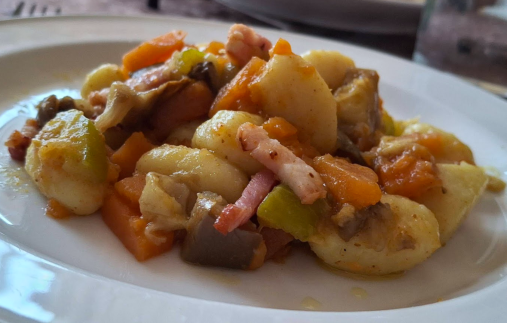

Gnocchi with Bacon à la Marta

Whip up this easy, savory gnocchi in no time. Simply crisp the bacon, boil the gnocchi, and toss together for perfection.
Italian Cuisine
23/04/2026
- This recipe focuses on achieving that perfect contrast between pillowy soft gnocchi and the salty, smoky crunch of bacon.
-
Prep TimeCook TimeServings15 Minutes10 Minutes4 People
-
Ingredientes500gFresh potato gnocchi200gThick-cut smoked bacon, diced2 clovesGarlic, minced1/2 cupHeavy cream (or a splash of pasta water for a lighter version)1/2 cupFreshly grated Parmesan cheese1 tbspExtra virgin olive oilHandfulFresh parsley, chopped
-
Procedure
Feel free to make any changes to adapt it to your needs